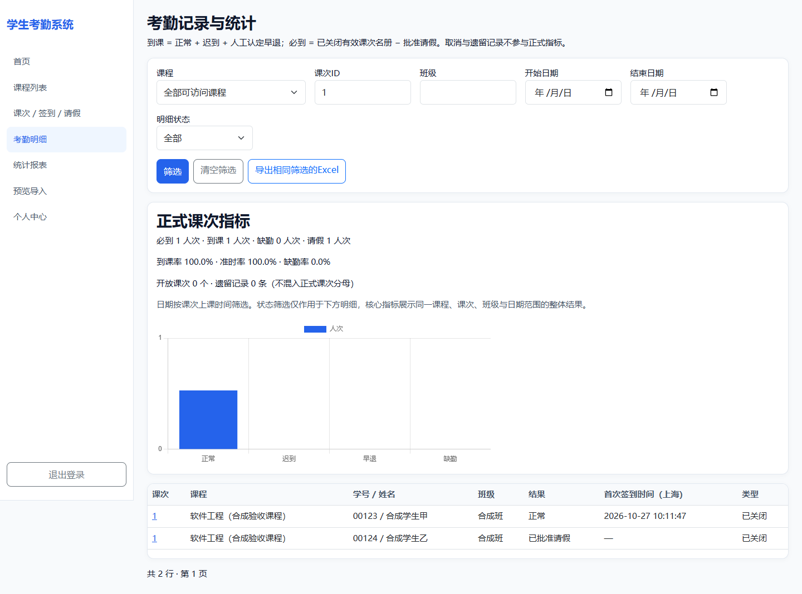
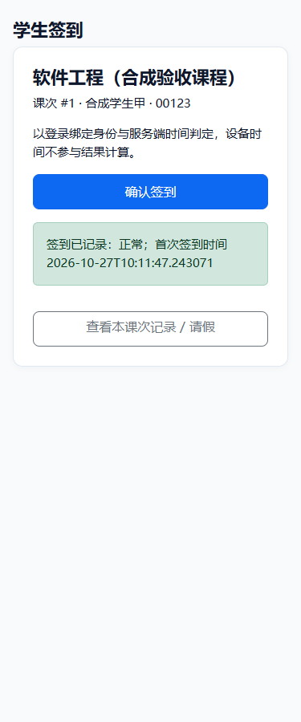

Web 应用 / Java 全栈项目
围绕管理员、教师、学生三类角色，完成从课程与选课管理、课次开放、动态二维码签到，到请假审批、考勤结算、统计导出和备份恢复的业务闭环。
Spring Boot · Spring Security · Thymeleaf · JPA · H2 / PostgreSQL · Flyway
133项完整自动化测试通过，失败、错误和跳过均为0。已完成浏览器扫码登录回跳、重复签到时间一致、请假审批、关闭课次及报表核对；H2与PostgreSQL合成数据恢复演练通过，Windows PowerShell5.1启动恢复副本通过。
测试运行时为JDK25，编译目标Java17。当前为本地验收版本，未进行真实生产切换。现场手机同WiFi、网络共享盘、Docker与JDK17实际运行等范围尚待验收。


版本：2026-10-27-v2。新版本独立打包，使用合成数据完成备份恢复、重启登录与报表核对；测试不使用真实学生资料。JAR编译目标Java17，本轮实际运行时为JDK25。
当前展示为项目介绍和验收截图；现场手机、网络共享盘、Docker、JDK17实际运行及生产切换尚未验收。